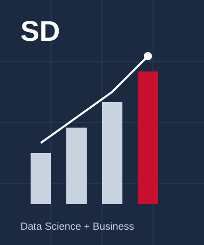

Welcome to My Website
Hi, I am Sahil Daga. I am a student at Northeastern University in Boston, where I am pursuing a combined degree in Data Science and Business Administration through the Khoury College of Computer Sciences and the D'Amore-McKim School of Business. I expect to graduate in May 2028.
I am from Nagpur, India, where my family runs a warehousing and logistics business. My interests sit where data and finance meet. I enjoy building data pipelines and dashboards that turn messy data into something clear, and I also enjoy researching companies and markets to understand what drives their value.
So far I have worked as a Solutions Engineering Co-op at VaultSpeed, a data automation startup in Boston, and as an Equity Research Intern at ProfitGate Capital Services in Nagpur. Before that I was a Data Analytics Intern at TechPaathshala in Mumbai and a Software Engineering Intern at Cricziner, a real time cricket analytics platform.
On campus I am the Research Lead at the Emerging Markets Club and a member of the Data Club. Back home I served as treasurer of the Leo Club of Nagpur Victory, where I helped organize a lake cleanup drive with more than 100 volunteers and handled the budget for a cycling fundraiser for a cancer hospital.
This website gives a short look at who I am and what I have worked on. Use the menu at the top to visit my Experience page, where you can see a timeline of my roles built with D3.
